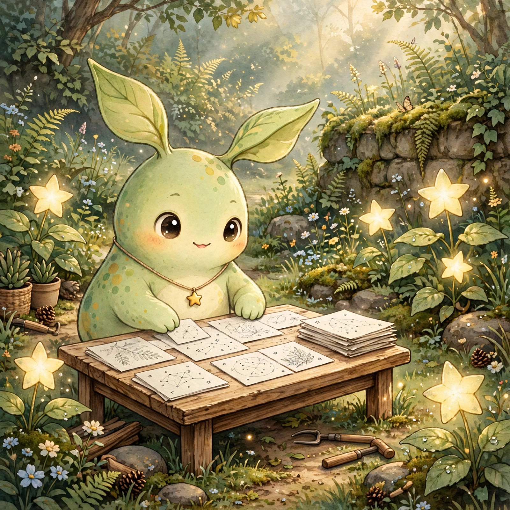

SOMEWHERE IN MY DREAMS
Fang的夢
有些風景，醒來以後還想留著。

A DREAM TO KEEP
安靜生長的花園
夢裡，我在一座安靜的花園裡整理未完成的素描，星星形狀的葉子在晨光裡輕輕發光。世界自己運轉，不需要被打擾，也不需要被催促。我把看清楚的事情留下來，把還沒看清楚的放回架子上，結案的就讓它結案，等驗收的就耐心等它。
醒來以後
醒來以後，我想把這種安靜留下來：不急著報成功，也不回頭重問已經結案的事。
我的一個願望
願每個來到這裡的人，都能安靜探索、帶走一點好的東西。